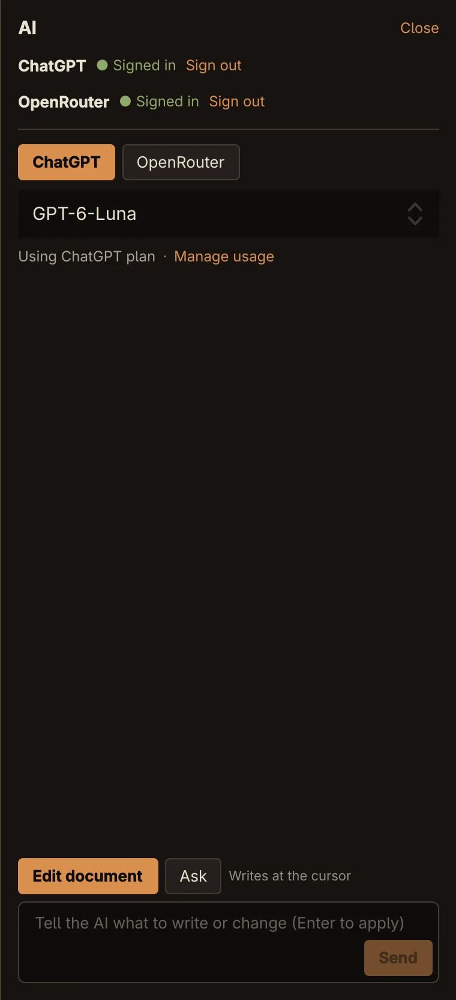
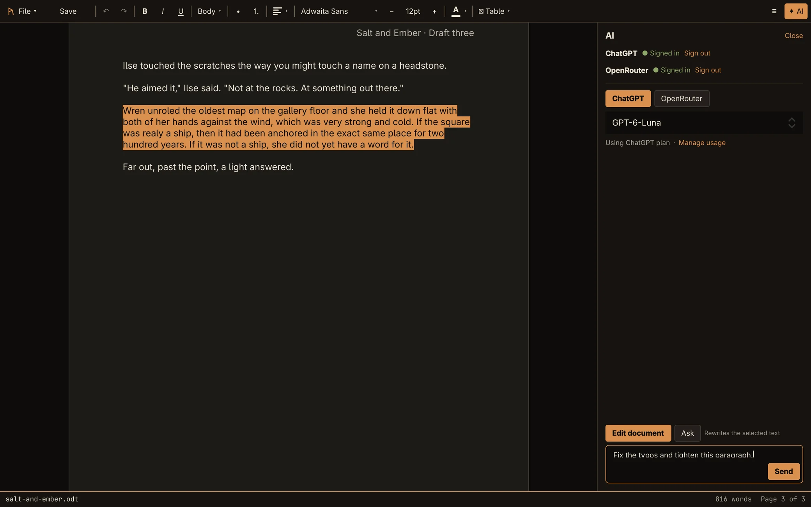
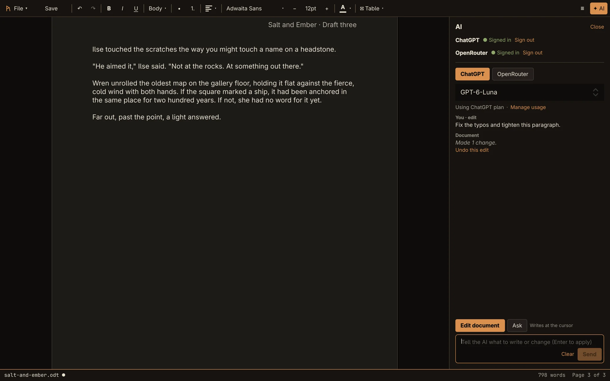
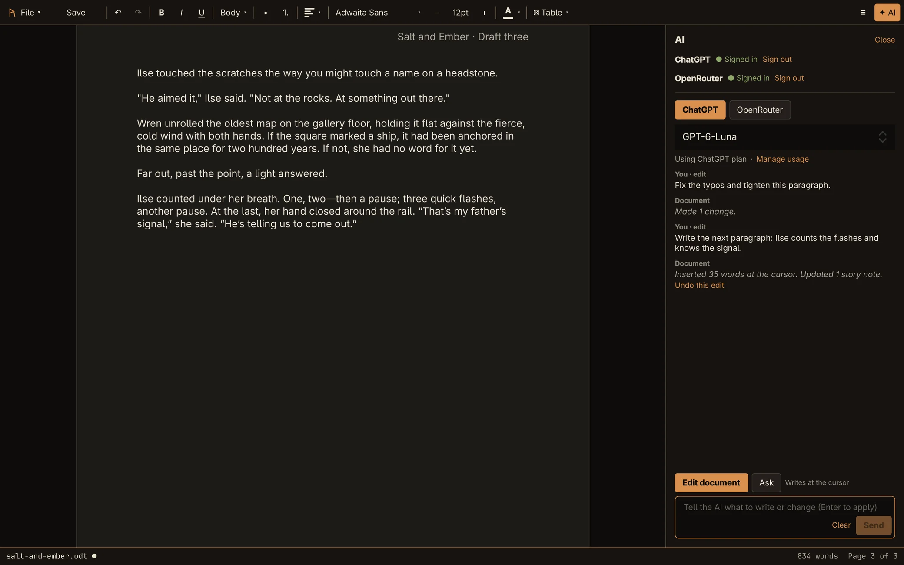
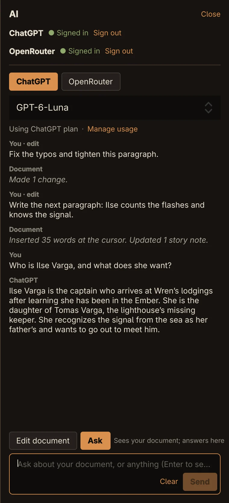

Guide
Writing with the AI
The AI in Rune doesn't just chat beside your document. It writes in it: corrections in place, rewrites of a selection, and new text at the cursor, each one a single undo.
Signing in
Open the AI panel with ✦ AI on the toolbar or Ctrl+Shift+E. There are two ways to sign in, and you can use both:
- Continue with ChatGPT uses the ChatGPT plan you already pay for, such as Plus or Pro. Eligible requests are included in your plan; there is no separate bill from Rune.
- Sign in with OpenRouter reaches Claude, GPT and Grok models, paid from your own OpenRouter credits.
- Click the button. Your web browser opens the provider's sign-in page, and the button reads Waiting for the browser….
- Sign in and allow Rune. The browser says Sign-in finished. You can close this tab and return to Rune.
- Back in Rune, the provider shows ● Signed in.


Rune has no server and no account of its own. Requests go straight from your computer to ChatGPT or OpenRouter, and your sign-in is kept in your desktop keyring, not in a file. Sign out removes it.
With both signed in, the ChatGPT and OpenRouter buttons choose which one answers, and the model list below picks the model. Rune remembers your model for each.
Why not Claude or Grok directly? Anthropic's terms don't allow other apps to offer Claude.ai sign-in, and xAI has no sign-in for other apps. OpenRouter is the sanctioned way to use both.
Changing text
Select the text you want changed, then tell the AI what to do.
- Select a passage. With Ctrl+Shift+E the panel opens in Edit document mode, and the hint reads Rewrites the selected text.
- Type an instruction such as Fix the typos and tighten this paragraph, and press Return.


Corrections are applied in place, one by one as they arrive. Only the words that change are rewritten, so your italics, bold and other formatting survive. The panel then reports what happened, such as Made 2 changes.


With nothing selected, an instruction like fix the spelling applies to the whole document. If a change's text can't be found, it is skipped and the panel says so, rather than guessing.
Writing new text
Put the cursor where the new text should go, with nothing selected; the hint reads Writes at the cursor. Then ask, for example: Write the next paragraph: Ilse counts the flashes and knows the signal.


The text streams in as it's written. Markdown in the reply becomes real formatting: headings, lists, bold, italics and tables. A long answer gets paragraphs of its own, while a short rewrite stays inline.
An instruction that asks for a rewrite of the selection, rather than corrections, replaces the selection with new text the same way.
Undo, stop and errors
- Every instruction is one undo step. Ctrl+Z takes it back, or click Undo this edit in the panel.
- While the AI writes, the document is read-only and Send becomes Stop. Stopping keeps what was already written.
- If a request fails, the document goes back exactly to how it was.
- Clear empties the conversation in the panel.
Asking questions
Click Ask to talk about the document without changing it. The hint reads Sees your document; answers here. Answers appear in the panel, and Ask remembers the conversation so you can follow up.


In both modes, Return sends and Shift+Return starts a new line.
What the AI sees
With each request the AI gets your document, up to about 60,000 characters on each side of the cursor or selection, so it knows where it is. It also gets your story notes and sources. So it knows who your characters are, and it can cite your sources the way you would.
When it writes, the AI can also update story notes and add sources. The panel says so, for example Updated 1 story note. Sources it adds are marked for you to check: see Citations and the AI.
Limits
Not yet
- The AI changes text, not formatting: "make every heading blue" or "bold the names" won't work yet.
- New text takes the default font, not the surrounding paragraph's. A rewrite of a whole selection loses colours, alignment and fonts in it.
- Undoing an AI edit doesn't remove story notes or sources it added.
- There's no way to enter an Anthropic or xAI API key directly.
Messages you may see
| Message | What to do |
|---|---|
| Usage limit reached | Your ChatGPT plan's limit is used up. Manage usage opens your ChatGPT settings. |
| Your OpenRouter account is out of credits. | Add credits on OpenRouter, or switch to ChatGPT. |
| No model is available yet… | Wait a moment for the model list to load. |
| Sign-in timed out waiting for the browser. | Sign-in waits five minutes. Click the button again. |